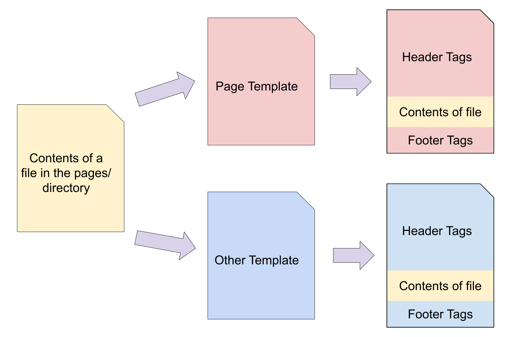
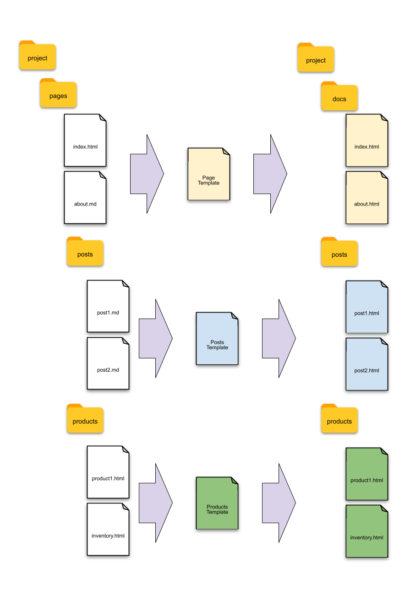
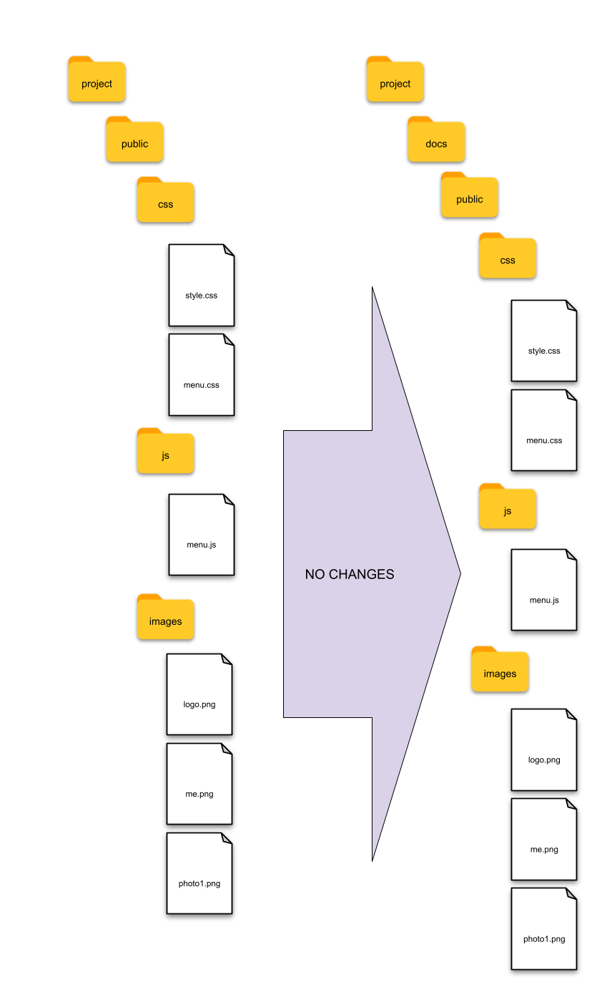
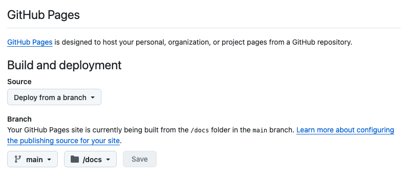

Pysite
A Super Simple Static Site Creator written in Python.
Requirements
- Python 3.14+
- Terminal and Code Editor (VS Code)
What it does
At the very basics, this script will take every HTML and Markdown file in a given set of folders and insert the contents of that file into a template, creating a new HTML file.
Each HTML or Markdown file from the selected folder will now have the same header (title, stylesheet, navigation) and footer content, which can be edited from the template file.

Installation
-
Copy the
pysite.py,server.py, andrequirements.txtfiles into your project folder. -
Create a Python Virtual Environment
python -m venv .venv
- Activate the environment
source .venv/bin/activate
- Install modules.
pip install -r requirements.txt
Site Setup
Folders
Create the following folders in your project folder:
- template/
- pages/
- public/
The names of these folders can be changed in the pysite.py file.
Folders: Top-level folders
Any file or folder at the top level of the project (the same level as the pages, public and template folders) will be ignored. Any file in the pages folder will be converted into an HTML file and placed in a folder or sub-folder in the top-level of the output folder. That is to say, any files and folders in the pages folder will be recreated exactly in the static output folder, but all files will have the appropriate template applied to them, and they will be converted to HTML files.

Any files and folders in the public folder will be copied exactly without alteration into the static output folder, including the public folder.

Folder: template
Inside the template folder, create any number of template files. For example:
- template/
page.htmlIs a page template. This file contains all of the HTML, with a placeholder, to create a 'page' page of the website.post.htmlIs a post template. This file contains all of the HTML, with a placeholder, to create a 'post' page of the website.
Other template files can be created here. Each of these files should contain the basic HTML structure (!DOCTYPE, <html>, <title>, <link>, <meta>, <body>, <main>, etc... and their corresponding closing tags) to create a page of the website.
An HTML or Markdown file selects which template to use in the YAML frontmatter of the file:
template: page
Folder: pages
These files contain the content of the webpage.
HTML and Markdown files inside the pages folder will be turned into HTML files to be served. Each file's content will inserted into the placeholder section of the specified template file.
The combined HTML file is named the same as the file name in the pages folder. All files and folders in the pages folder will be recreated in the docs folder with paths, folders and file names preserved.
Therefore, a file at pages/about/me.md will be turned into docs/about/me.html and will be accessible at the URL https://website.com/about/me.html.
Folder: pages/posts
To have a blog, create a posts folder inside the pages folder. Every file in the posts folder should have YAML with at least the date, title, and template fields. This is required for automatically creating the 'previous' and 'next' post links.
Folder: public
The files and folders in the public/ folder will be copied recursively to the docs folder without alteration.
This is where you put the images, css and Javascript. Suggested file structure:
- public/
- css/
- style.css
- images/
- logo.png
- picture1.jpg
- js/
- menu.js
- files/
- ExampleData.csv
- GreatHandout.pdf
Access the files in these folders in your HTML and Markdown as absolute paths:
The file public/images/logo.png is accessed like <img alt="alt description" src="/public/images/logo.png"> for HTML and  for Markdown.
The CSS file can be accessed in the template/head.html file like so: <link rel="stylesheet" href="/public/css/style.css">
Folders: docs
After the pysite.py or server.py script is executed (by running python pysite.py or python server.py in the terminal), a docs folder is created and populated with files from the pages and public folders. All of the files in the pages folder will have a specific template applied to them and converted to an HTML file (if not already), before being copied into it's respective folder in the docs folder. The docs folder is deleted and recreated every time the pysite.py or server.py script is executed.
The docs folder can be copied to a web host to be served as the static website.
If using GitHub Pages, select the docs folder as the folder to build the site from.

The name of the static files output folder can be changed in the pysite.py file.
Files
Files in the top-level folder
All files in the top-level folder of the project (the same level as the pages, public and template folders) are ignored.
Files in the template folder
Any file in the template folder is considered a template. It should be a full HTML file with
{> CONTENT <}
placed where the content of files from the pages directory should go.
A simple pages template might look like:
<!DOCTYPE html>
<html lang="en">
<head>
<meta charset="UTF-8">
<meta name="viewport" content="width=device-width, initial-scale=1.0">
<title>My Groovy Website</title>
<link rel="stylesheet" href="/public/css/style.css">
</head>
<body>
<div class="logo">
<img alt="My logo" src="/public/images/logo.webp">
</div>
<header>
<nav>
<a href="/">HOME</a>
<a href="/posts">Blog</a>
<a href="/about">About</a>
</nav>
</header>
<main>
{> CONTENT <}
</main>
</body>
</html>
At least one template file must exist. The default is to look for a template/page.html file. This setting can be changed in pysite.py.
DEFAULT_TEMPLATE = 'page'
Files in the pages folder
All files in the pages folder and any sub-folders will have a template applied and then copied into the respective folder in the docs folder.
Each file can have a YAML frontmatter (even HTML files) to tell the application which template to apply. YAML frontmatter can look like this:
---
title: 'HTML page example'
author: 'Ammon Shepherd'
date: '2026-04-13 21:23:33'
template: post
---
The default template is applied when no YAML or no temlpate: option is provided.
Any variable in the YAML frontmatter can be used as a variable in the file and template using double curly braces and the variable name.
For example, a blog post can look like this:
---
title: 'Blog post example'
author: 'Ammon Shepherd'
date: '2026-04-13 21:23:33'
template: post
---
#
Date:
Here's my first blog post using this way cool static site generator.
Here's a picture of Pete, my pet python!

Author:
The post template could use the title variable like so:
<!DOCTYPE html>
<html lang="en">
<head>
<meta charset="UTF-8">
<meta name="viewport" content="width=device-width, initial-scale=1.0">
<title></title>
Jijna2 is used for converting template variables, so any Jinja2 templating is allowed.
Files in the public folder
Any file in the public folder is copied exactly, without any alteration, into the docs/public/ folder or sub-folder. All files in the public folder are accessible directly in the URL at their respective location.
For example, a file at public/css/style.css is available at https://website.com/public/css/style.css in the browser.
Usage
After your site's files are created, run the following command in the terminal
python server.py
This will create the docs folder, create and convert any files and folders, and place them in the appropriate locations, then start an HTML server.
For development testing, you can view the site at http://127.0.0.1:8000
The server will notice changes to files every second and restart the server so you can refresh the browser to the latest changes.
You can transfer the files from the docs folder to your web host for static file serving glory!
If using GitHub Pages, choose to serve files from the docs folder.